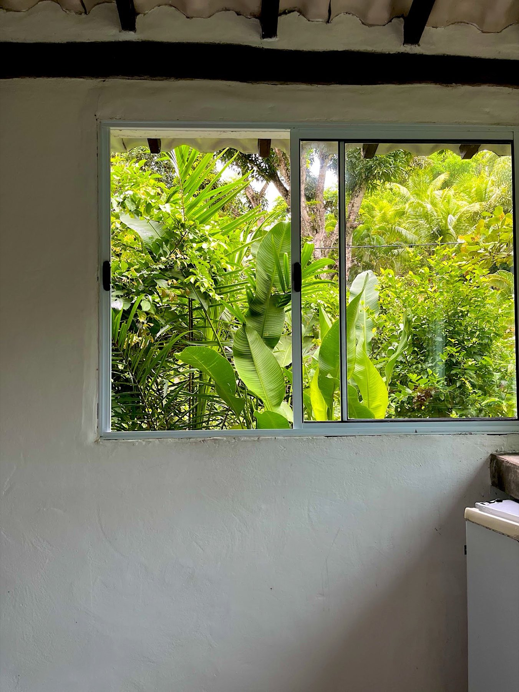
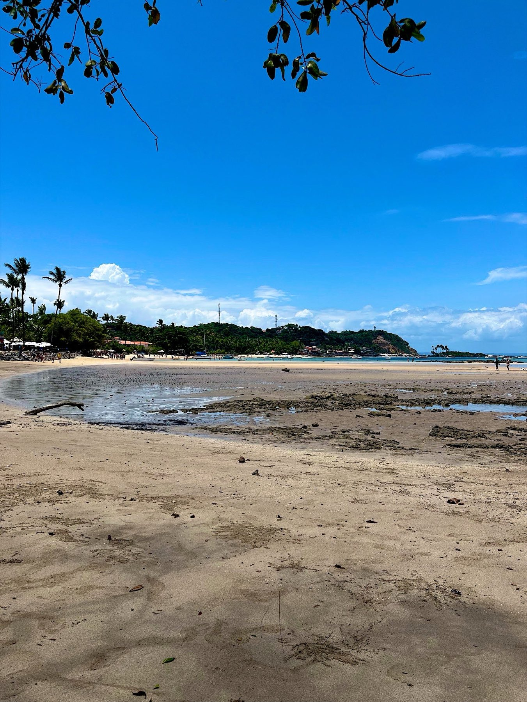
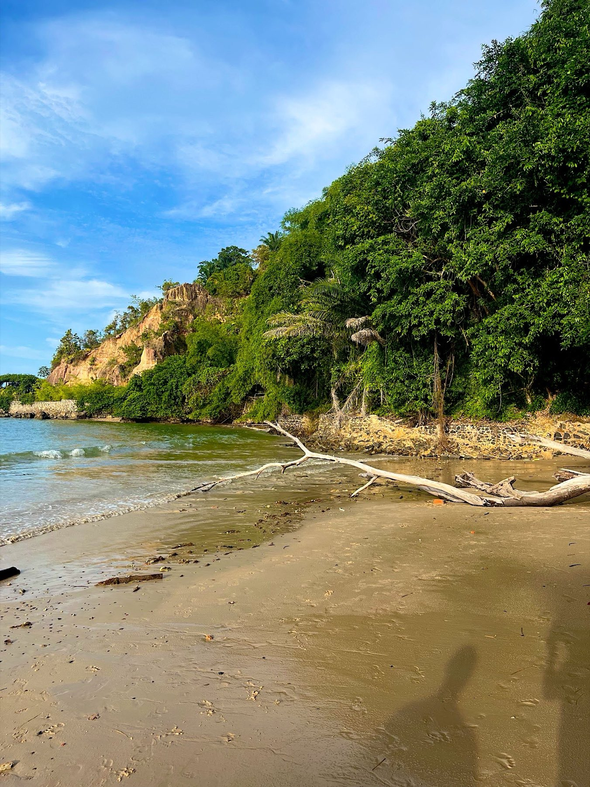
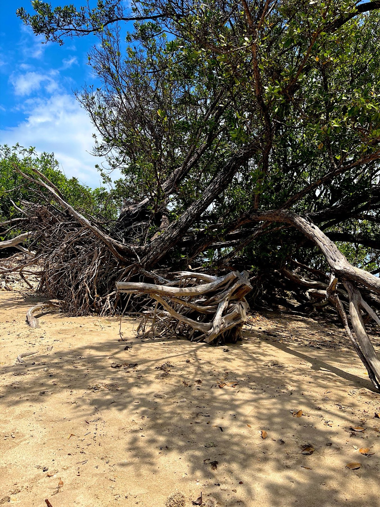

Just south of Salvador, on the island of Tinharé, Morro de São Paulo is the Bahia beach escape Americans dream about: no cars, sandy lanes, wheelbarrow porters, a hilltop lighthouse and a string of beaches simply named First, Second, Third and Fourth. Days revolve around the tides; nights around caipirinhas on the sand.
- Car-free village
- Natural pools at low tide
- Island boat tour
- Lighthouse sunset
- Segunda Praia nightlife
- Boipeba day trip
The beaches, one by one
- Primeira Praia: closest to the village, small and calm, with surfable waves on some days.
- Segunda Praia: the social heart — beach bars, music and the island’s nightlife.
- Terceira Praia: calmer water, pousadas right on the sand and natural pools at low tide; boat tours leave from here.
- Quarta Praia: long, wide and peaceful, with the best natural pools when the tide drops.
- Praia do Encanto (Quinta): remote and nearly empty — the reward for a long beach walk.

Can’t-miss experiences
- Sunset at Toca do Morcego near the old fort, or from the lighthouse (Farol) trail.
- The “volta à ilha” boat tour: a full-day loop with stops at the Garapuá and Moreré natural pools, Boipeba island and the oyster farms of Cairu.
- Gamboa clay baths: a short walk or boat to the cliffs where you can coat yourself in natural mineral clay.
- Zip line from the lighthouse to Primeira Praia for an adrenaline-fueled arrival.

How to get to Morro de São Paulo
The fastest scenic option is the catamaran from Salvador’s Terminal Náutico (around 2–2.5 hours; the open-sea crossing can be rough, so take seasickness medicine). The “semi-terrestre” route combines ferry, road and speedboat via Valença and is gentler on the stomach. Small planes from Salvador take roughly 25 minutes. Full breakdown in our Salvador → Morro transport guide. Expect a small municipal tourism fee on arrival.

Where to stay
Stay on Segunda Praia for nightlife, Terceira for convenience and calm water, or Quarta for quiet luxury. Our Morro de São Paulo pousada guide compares the areas.
Morro de São Paulo in pictures








Morro de São Paulo FAQ
How do I get from Salvador to Morro de São Paulo?
Take the catamaran from Salvador’s Terminal Náutico (about 2–2.5 hours), the semi-terrestre ferry-plus-road route via Valença (about 3.5–4 hours, calmer), or a small plane (about 25 minutes). Book catamarans a day ahead in high season.
Which beach is best in Morro de São Paulo?
Segunda Praia is best for nightlife, Terceira Praia for families and boat tours, and Quarta Praia for long walks and the best natural pools at low tide.
Is Morro de São Paulo safe?
Morro de São Paulo is generally considered one of the more relaxed places in Bahia for visitors. Use normal precautions: don’t leave belongings unattended on the beach and use lit paths at night.